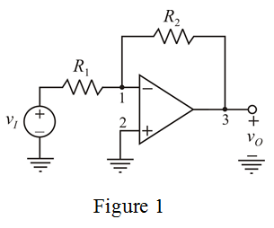
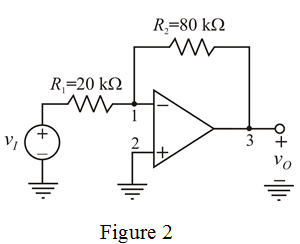

Assume that op-amp is ideal one.
Voltages at inverting and non-inverting terminal are same.

From Figure 1, .
Therefore, .
Apply Kirchhoff’s current law at inverting terminal.
Consider the circuit model for inverting op-amp.

Assume that op-amp is ideal one.
Voltages at inverting and non-inverting terminal are same.
From Figure 1, .
Therefore, .
Apply Kirchhoff’s current law at inverting terminal.
Consider the gain of the op-amp is .
The voltage gain of the inverting terminals is,
…… (1)
Consider the total resistance is .
.
…… (2)
Substitute for  in equation (2).
in equation (2).
Substitute for  in equation (1).
in equation (1).

Draw the designed circuit.

Therefore, the circuit is deisgned with the specified parameters.